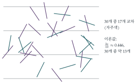

STEP I 1993, 문제 16
계속 읽기 전에 문제를 먼저 읽어 보자. 문제는 STEP Support Programme의 문제 데이터베이스에 있다: step.maths.org/questions/93-s1-q16
도입
평행한 마룻널이 깔린 바닥에 바늘을 떨어뜨려 보자. 바늘이 널 사이의 틈에 걸칠 확률에는 \(\pi\)가 들어 있다. 어디에도 원은 보이지 않는데도 그렇다. 여러 번 던져서 교차한 횟수를 세면 실험으로 \(\pi\)를 추정할 수 있다. 이것이 뷔퐁의 바늘(Buffon’s needle) 문제이다. 뷔퐁 백작 조르주루이 르클레르(Georges-Louis Leclerc, Comte de Buffon)가 1733년에 제기하고 1777년에 직접 풀었다. 이는 기하학적 확률(geometric probability)의 첫 번째 문제이며, 모든 몬테카를로 방법(Monte Carlo method)의 조상이다.
\(\pi\)는 각도에서 나온다. 바늘의 방향은 반 바퀴 위에서 균등하게 분포하며, 선들에 수직인 방향으로 드리운 바늘의 “그림자” 길이를 모든 방향에 대해 평균하면 \(\frac2\pi\)라는 인수가 나온다. 이 문제는 \(\cos^{-1}\)의 적분으로 이 계산을 수행한다.
시작하기 전에
핀의 중심은 가장 가까운 선에서 거리 \(x\)만큼 떨어져 있고, 핀은 선들의 수선과 각 \(y\)를 이룬다. 핀은 선 쪽으로 얼마나 멀리 뻗어 있는가?
핀의 각 절반은 길이가 \(a\)이고, 선들에 수직인 성분은 \(a\cos y\)이다. 따라서 핀은 정확히 \(a\cos y \geq x\)일 때 가장 가까운 선과 교차한다. (\(a < b\)이므로 다른 선에는 닿을 수 없다.)
차근차근 풀기
단계 1 적분
\(t = \cos y\)로 놓으면, \(t\)가 \(0\)에서 \(1\)까지 변할 때 \(y = \cos^{-1}t\)는 \(\frac\pi2\)에서 \(0\)까지 변하고, \(\mathrm{d}t = -\sin y\,\mathrm{d}y\)이다. 따라서 \[\int_0^1\cos^{-1}t\,\mathrm{d}t = \int_0^{\pi/2}y\sin y\,\mathrm{d}y = \bigl[-y\cos y\bigr]_0^{\pi/2} + \int_0^{\pi/2}\cos y\,\mathrm{d}y = 0 + 1 = 1. \qed\] (또는 이렇게 볼 수도 있다. 이 적분은 \(\cos^{-1}\)의 그래프와 두 축 사이의 넓이이며, 이는 \(0\)에서 \(\frac\pi2\)까지 \(y = \cos x\) 아래의 넓이를 \(y = x\)에 대해 대칭이동한 것과 같다.)
단계 2 위치가 주어졌을 때
\(x\)를 고정하면 어떤 각 \(y\)에서 교차가 일어나는가? 그 확률은 얼마인가?
\(x \geq a\)이면 핀은 선에 닿을 수 없다. \(x < a\)이면 교차하려면 \(\cos y \geq \frac xa\), 즉 \(y \leq \cos^{-1}\frac xa\)이어야 한다. \(Y\)는 \([0, \frac\pi2]\)에서 균등분포(uniform distribution)를 따르므로 \[\mathrm{P}(\text{교차} \mid X = x) = \frac{2}{\pi}\cos^{-1}\frac xa \qquad (0 \leq x < a). \qed\]
단계 3 위치에 대해 평균하기
\(X\)는 \([0, b]\)에서 균등분포를 따르고 확률밀도(density)는 \(\frac1b\)이므로, \(x = at\)로 치환하면 \[\mathrm{P}(\text{교차}) = \frac1b\int_0^a\frac2\pi\cos^{-1}\frac xa\,\mathrm{d}x = \frac{2a}{\pi b}\int_0^1\cos^{-1}t\,\mathrm{d}t = \frac{2a}{\pi b}, \qed\] 이다.
바늘의 길이가 간격의 절반의 두 배, 즉 간격과 정확히 같다면(\(a = \frac{b}{2}\)이므로 바늘의 길이 \(2a\)가 \(b\)와 같다) 교차 확률은 \(\frac1\pi\)이다. \(\pi\)를 소수점 아래 둘째 자리까지 추정하려면 몇 번이나 던져야 할까?

돌아보기
두 개의 독립인 좌표. 핀의 위치와 각도는 서로 독립(independent)이고 균등분포를 따르므로, 확률은 한 번에 한 변수씩 계산할 수 있는 이중적분(double integral)이었다.
조건을 걸고, 그다음 평균하기. 먼저 \(x\)를 고정하고 각도에 대해 평균한 다음, \(x\)에 대해 평균한다.
치환이 상수를 드러낸다. \(x = at\)로 척도를 바꾸자 답이 하나의 보편적인 적분으로 귀결되었다.
숨은 수학
뷔퐁의 국수
거의 계산 없이 답을 알아내는 방법이 있다. 바늘을 아무 모양으로나 구부려 “국수(noodle)”를 만들고, 그것이 선과 교차하는 횟수를 \(C\)라 하자. 기댓값의 선형성(linearity of expectation)에 의해 곡선의 교차 횟수의 기댓값은 그 작은 조각들의 기댓값의 합이므로 길이에 비례한다. 즉 어떤 상수 \(\kappa\)에 대해 \(\mathrm{E}(C) = \kappa L\)이다. \(\kappa\)를 구하기 위해 국수를 지름이 선의 간격 \(2b\)와 같은 원으로 잡자. 이 원은 항상 정확히 두 번 교차하고, 길이는 \(2\pi b\)이다. 따라서 \(\kappa \cdot 2\pi b = 2\)이고, \(\kappa = \frac{1}{\pi b}\)이다. 길이가 \(2a < 2b\)인 곧은 바늘은 많아야 한 번 교차하므로 \(\mathrm{P}(\text{교차}) = \mathrm{E}(C) = \frac{2a}{\pi b}\)이다. 이 논증은 Joseph-Émile Barbier(1860)가 제시한 것으로, 확률적 추론의 보석이라 할 만하다. \(\pi\)는 상수를 보정하기 위해 고른 원에서 나온다.
\(\pi\) 추정하기, 그리고 하지 말아야 할 방법
바늘 \(n\)개를 던져서 \(c\)개가 교차했다면 \(\frac cn \approx \frac{2a}{\pi b}\)이고 \(\pi \approx \frac{2an}{bc}\)이다. 오차는 \(\frac{1}{\sqrt n}\) 정도로만 줄어들기 때문에, \(\pi\)를 소수점 아래 셋째 자리까지 구하려면 약 백만 번을 던져야 한다. 1901년 이탈리아의 수학자 Mario Lazzarini는 \(3408\)번 던져서 \(\pi \approx \frac{355}{113} = 3.1415929\ldots\)(소수점 아래 여섯째 자리까지 정확)를 얻었다고 주장했다. 통계학자들은 이 결과가 믿기에는 지나치게 좋다고 지적했다. \(3408\)번 던지고 바늘을 신중하게 고르면 \(\frac{355}{113}\)은 정확히 \(1808\)번의 교차에서 나오며, 적절한 순간에 실험을 멈추면 이 값을 만들어 낼 수 있다. 이는 선택적 보고에 관한 고전적인 교훈담이다.
뷔퐁은 박물학자로, 파리 왕립 식물원의 원장이었고 \(36\)권짜리 박물지를 썼다. 그는 바늘 문제(그리고 정사각형 타일을 쓰는 변형인 “franc-carreau” 게임)를 1733년 과학 아카데미(Académie des Sciences)에 발표했고, 1777년에 그 풀이를 출판했다. 그의 목적은 산술뿐 아니라 기하학도 확률에 쓰일 수 있음을 보이는 것이었다. 여기에서 무작위 직선과 그것이 곡선 및 곡면과 만나는 교점을 다루는 이론인 적분기하학(integral geometry)이 자라났고, 이는 오늘날 2차원 단면으로부터 3차원 구조(예를 들어 조직 속의 세포)의 크기와 모양을 추정하는 학문인 입체해석학(stereology)에 쓰인다.
사고 기술
결과가 서로 독립인 여러 연속확률변수에 의존할 때, 어떤 사건의 확률은 그 사건이 일어나는 영역 위에서 결합확률밀도(joint density)를 적분한 것이다.
대학에서는 이것이 연속확률의 기초가 된다. 결합확률밀도, 주변분포(marginal distribution), 변수변환(change of variable)이 그것이며, 이들은 모두 12.21 절과 12.22 절에서 다시 등장한다.
더 도전하기
긴 바늘. \(a > b\)이면 바늘이 두 개 이상의 선과 교차할 수 있다. 이때도 교차 횟수의 기댓값이 여전히 \(\frac{2a}{\pi b}\)임을 보여라.
국수. 길이가 \(2a\)인 바늘을 직각으로 구부린다(두 팔의 길이는 각각 \(a\)). 교차 횟수의 기댓값은 얼마인가?
정사각형 타일. 반지름이 \(r\)인 동전을 한 변의 길이가 \(s > 2r\)인 정사각형 타일이 깔린 바닥에 던진다. 동전이 한 타일 안에 완전히 놓일 확률을 구하여라.
Lazzarini의 바늘. \(a = \frac56b\)일 때(\(\frac{2a}{\pi b} = \frac{5}{3\pi}\)이다), \(3408\)번 던져서 \(1808\)번 교차하면 추정값 \(\pi \approx \frac{355}{113}\)을 얻음을 보여라.
더 읽을거리
Daniel Klain & Gian-Carlo Rota, Introduction to Geometric Probability (Cambridge University Press). 뷔퐁의 바늘에서 출발하는 기하학적 확률 입문서이다.
Lee Badger, “Lazzarini’s lucky approximation of \(\pi\)”, Mathematics Magazine 67 (1994). 의심스러운 실험의 통계학을 다룬다.
Paul Nahin, Digital Dice (Princeton University Press). 확률 문제를 위한 몬테카를로 방법을 다룬다.